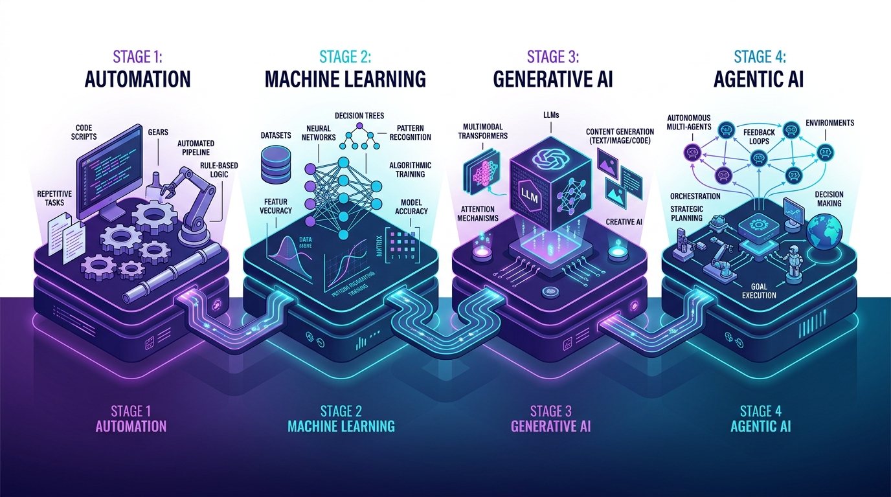

Autonomous AI Automation & Agentic Swarm Engineering
What is Artificial Intelligence?
Artificial Intelligence (AI) is the science and engineering of computational architectures capable of perceiving environmental inputs, contextual reasoning, autonomous problem-solving, and continuous learning from experience.
In modern enterprise engineering, AI shifts systems from fragile, deterministic rule scripts into self-governing cognitive entities that understand strategic intent, orchestrate tool APIs, and achieve verifiable outcomes.

1. The Rulebook Era (Rules & Expert Systems)
1990s – 2000sA rigid cage of deterministic If/Then flowcharts. No learning, zero adaptability; crashes instantly upon unexpected schema drift.
2. Statistical Machine Learning (Pattern Recognition)
2010sReplaces human rules with mathematical models trained on historic datasets to learn weights, minimize loss, and predict probabilities.
3. Generative AI & Foundation Models (Transformers)
2022 – PresentMulti-billion parameter transformers reasoning across multimodal context with multi-head self-attention mechanisms and code synthesis.
4. Autonomous AI Agents (Self-Governing Swarms)
Next GenFrom following rules to writing their own rules! Autonomous goal-directed reasoning, Model Context Protocol (MCP) tool execution & self-healing.
Architectural Epochs
Understanding Automation, Traditional ML, and GenAI
Explore the fundamental technologies, paradigm transitions, and skills covered in this MasterClass.
Remotion Motion Graphics: The Agentic Reasoning Loop
A React-driven Remotion motion graphic demonstrating continuous multi-agent token stream execution, tool dispatch, and verification in a 30-second loop.
Full-Stack Enterprise Autonomous Agent Architecture
An enterprise agentic stack is composed of 5 decoupled layers: Ingress Moderation, Cognitive Planning, MCP Tool Protocols, Memory Vector Store, and Human Verification. Select each layer to inspect its protocol details and operational SLAs.
Semantic Ingress & Moderation Gateway
Intercepts incoming requests before LLM inference to validate prompt safety, detect injection attempts, enforce rate limits, and sanitize PII.
Autonomous Multi-Tool Agent Execution Studio
Choose an enterprise incident scenario, select your inference engine, and run the real-time agentic loop. Watch the model reason, call MCP tools, observe results, and formulate a resolution.